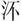

。者何？邾娄之邑也。曷为不系于邾娄？讳亟也。
。者何？邾娄之邑也。曷为不系于邾娄？讳亟也。春秋公羊传卷十七
成公上
成公元年
春，王正月，公即位。
二月辛酉，葬我君宣公。
无冰。
三月，作丘甲。何以书？讥。何讥尔？讥始丘使也。
夏，臧孙许及晋侯盟于赤棘。
秋，王师败绩于贸戎。孰败之？ 盖晋败之，或曰贸戎败之。然则曷为不言晋败之？王者无敌，莫敢当也。
冬十月。
成公二年
春，齐侯伐我北鄙。
夏四月丙戌，卫孙良夫帅师及齐师战于新筑，卫师败绩。
六月癸酉，季孙行父、臧孙许、叔孙侨如、公孙婴齐帅师会晋郤克、卫孙良夫、曹公子手及齐侯战于鞌，齐师败绩。曹无大夫，公子手何以书？忧内也。
秋七月，齐侯使国佐如师。己酉，及国佐盟于袁娄。君不使乎大夫，此其行使乎大夫何？佚获也。其佚获奈何？师还齐侯，晋郤克投戟逡巡 再拜稽首马前。逢丑父者，顷公之车右也，面目与顷公相似，衣服与顷公相似，代顷公当左。使顷公取饮，顷公操饮而至，曰：“革取清者。”顷公用是佚而不反。逢丑父曰：“吾赖社稷之神灵，吾君已免矣。”郤克曰：“欺三军者其法奈何？”曰：“法斮。”于是斮逢丑父。己酉，及齐国佐盟于袁娄。曷为不盟于师而盟于袁娄？前此者，晋郤克与臧孙许同时而聘于齐。萧同侄子者，齐君之母也，踊于棓而窥客，则客或跛或眇，于是使跛者迓跛者，使眇者迓眇者。二大夫出，相与踦闾而语，移日然后相去。齐人皆曰：“患之起必自此始！”二大夫归，相与率师为鞌之战，齐师大败。齐侯使国佐如师，克曰：“与我纪侯之，反鲁、卫之侵地，使耕者东亩，且以萧同侄子为质，则吾舍子矣。”国佐曰：“与我纪侯之甗，请诺。反鲁、卫之侵地，请诺。使耕者东亩，是则土齐也。萧同侄子者，齐君之母也，齐君之母，犹晋君之母也，不可。请战，一战不胜请再，再战不胜请三，三战不胜，则齐国尽子之有也，何必以萧同侄子为质？”揖而去之。郤克眣鲁、卫之使，使以其辞而为之请，然后许之。逮于袁娄而与之盟。
八月壬午，宋公鲍卒。
庚寅，卫侯遫卒。
取汶阳田。汶阳田者何？鞌之赂也。
冬，楚师、郑师侵卫。
十有一月，公会楚公子婴齐于蜀。
丙申，公及楚人、秦人、宋人、陈人、卫人、郑人、齐人、曹人、邾娄人、薛人、郐人盟于蜀。此楚公子婴齐也，其称人何？得一贬焉尔。
成公三年
春，王正月，公会晋侯、宋公、卫侯、曹伯伐郑。
辛亥，葬卫缪公。
二月，公至自伐郑。
甲子，新宫灾，三日哭。新宫者何？宣公之宫也。宣宫则曷为谓之新宫？不忍言也。其言三日哭何？庙灾三日哭，礼也。新宫灾何以书？记灾也。
乙亥，葬宋文公。
夏，公如晋。
郑公子去疾帅师伐许。
公至自晋。
秋，叔孙侨如率师围棘。棘者何？汶阳之不服邑也。其言围之何？不听也。
大雩。
晋郤克、卫孙良夫伐将咎如。
冬，十有一月，晋侯使荀庚来聘。
卫侯使孙良夫来聘。
丙午，及荀庚盟。
丁未，及孙良夫盟，此聘也，其言盟何？聘而言盟者，寻旧盟也。
郑伐许。
成公四年
春，宋公使华元来聘。
三月壬申，郑伯坚卒。
杞伯来朝。
夏四月甲寅，臧孙许卒。
公如晋。
葬郑襄公。
秋，公至自晋。
冬，城运。
郑伯伐许。
成公五年
春，王正月，杞叔姬来归。
仲孙蔑如宋。
夏，叔孙侨如会晋荀秀于谷。
梁山崩。梁山者何？河上之山也。梁山崩何以书？记异也。何异尔？大也。何大尔？梁山崩，壅河三日不。外异不书，此何以书？为天下记异也。
秋大水。
冬，十有一月己酉，天王崩。
十有二月己丑，公会晋侯、齐侯、宋公、卫侯、郑伯、曹伯、邾娄子、杞伯同盟于虫牢。
成公六年
春，王正月，公至自会。
二月辛巳，立武宫。武宫者何？武公之宫也。立者何？立者不宜立也。立武宫，非礼也。
取。者何？邾娄之邑也。曷为不系于邾娄？讳亟也。
卫孙良夫率师侵宋。
夏六月，邾娄子来朝。
公孙婴齐如晋。
壬申，郑伯费卒。
秋，仲孙蔑、叔孙侨如率师侵宋。
楚公子婴齐率师伐郑。
冬，季孙行父如晋。
晋栾书率师侵郑。
成公七年
春，王正月，鼷鼠食郊牛角。改卜牛，鼷鼠又食其角，乃免牛。
吴伐郯。
夏五月，曹伯来朝。
不郊，犹三望。
秋，楚公子婴齐率师伐郑。
公会晋侯、齐侯、宋公、卫侯、曹伯、莒子、邾娄子、杞伯救郑。八月戊辰，同盟于马陵。公至自会。
吴入州来。
冬，大雩。
卫孙林父出奔晋。
成公八年
春，晋侯使韩穿来言汶阳之田，归之于齐。来言者何？内辞也，胁我使我归之也。曷为使我归之？鞌之战，齐师大败，齐侯归，吊死视疾，七年不饮酒、不食肉。晋侯闻之曰：“嘻！奈何使人之君七年不饮酒、不食肉，请皆反其所取侵地。”
晋栾书帅师侵蔡。
公孙婴齐如莒。
宋公使华元来聘。
夏，宋公使公孙寿来纳币。纳币不书，此何以书？录伯姬也。
晋杀其大夫赵同、赵括。
秋七月，天子使召伯来锡公命。其称天子何？元年春王正月，正也，其余皆通矣。
冬十月癸卯，杞叔姬卒。
晋侯使士燮来聘。
叔孙侨如会晋士燮、齐人、邾娄人伐郯。
卫人来媵。媵不书，此何以书？录伯姬也。
成公九年
春，王正月，杞伯来逆叔姬之丧以归。杞伯曷为来逆叔姬之丧以归？内辞也，胁而归之也。
公会晋侯、齐侯、宋公、卫侯、郑伯、曹伯、莒子、杞伯同盟于蒲。公至自会。
二月，伯姬归于宋。
夏，季孙行父如宋致女。未有言致女者，此其言致女何？录伯姬也。
晋人来媵。媵不书，此何以书？录伯姬也。
秋七月丙子，齐侯无野卒。
晋人执郑伯。
晋栾书帅师伐郑。
冬十有一月，葬齐顷公。
楚公子婴齐帅师伐莒。庚申，莒溃。
楚人入运。
秦人、白狄伐晋。
郑人围许。
城中城。
成公十年
春，卫侯之弟黑背率师侵郑。
夏四月，五卜郊不从，乃不郊。其言乃不郊何？不免牲，故言乃不郊也。
五月，公会晋侯、齐侯、宋公、卫侯、曹伯伐郑。
齐人来媵，媵不书，此何以书？录伯姬也。三国来媵非礼也，曷为皆以录伯姬之辞言之？妇人以众多为侈也。
丙午，晋侯獳卒。
秋七月。
公如晋。